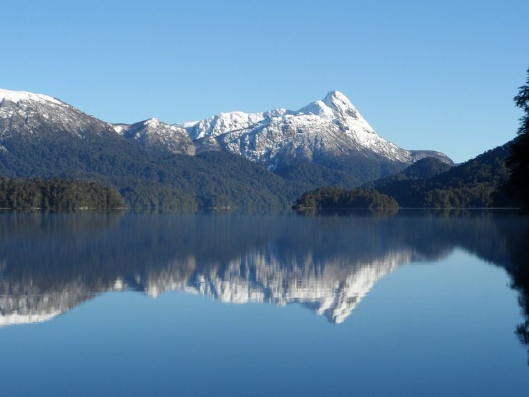
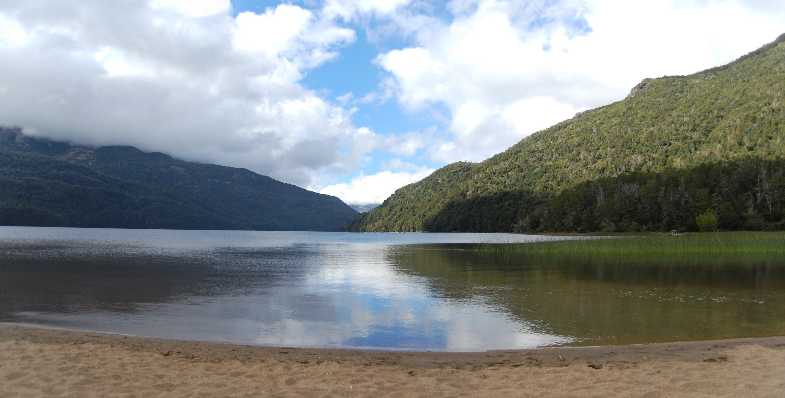
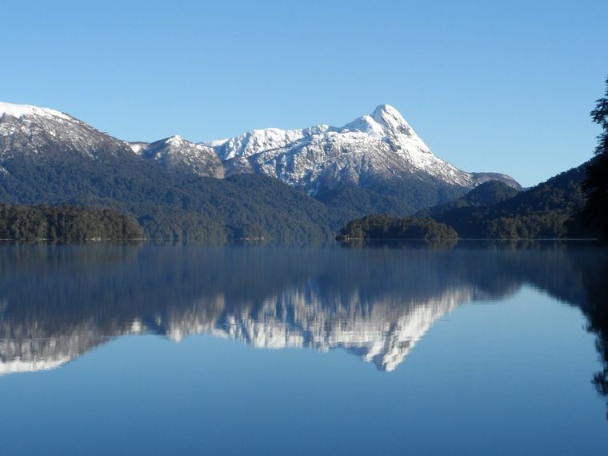
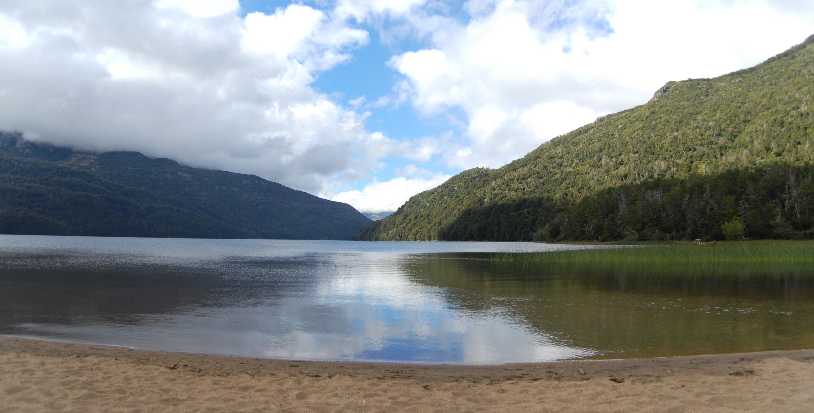

Camino de los Siete Lagos: un viaje por la Patagonia argentina
¿Te imaginas un recorrido por una carretera bordeada de lagos cristalinos, montañas nevadas y bosques
frondosos? Ese es el espectáculo que te espera en el Camino de los Siete Lagos, un destino imperdible
para los amantes de la naturaleza y la aventura.
Este increíble camino está ubicado en la Patagonia argentina, en la provincia de Río Negro. El recorrido
comienza en la ciudad de San Martín de los Andes y finaliza en Bariloche, pasando por siete lagos de
aguas cristalinas:
El atractivo principal del destino: el Camino de los Siete Lagos, un recorrido por una carretera bordeada de lagos cristalinos, montañas nevadas y bosques frondosos.
El recorrido completo que ofrece el tour: visita a los siete lagos, pueblos pintorescos, atracciones turísticas y actividades al aire libre.
La experiencia inolvidable que ofrece el tour: un viaje lleno de naturaleza, aventura y cultura.
 



Reserva tu tour ahora y vive una experiencia inolvidable en el Camino de los Siete Lagos!
Cómo llegar
Informacion Del Paquetes
Una experiencia inolvidable
El Camino de los Siete Lagos es un lugar mágico que te dejará sin aliento. Con nuestro tour,
tendrás la oportunidad de conocer este increíble lugar y vivir una experiencia inolvidable.
Incluye:
No incluye: